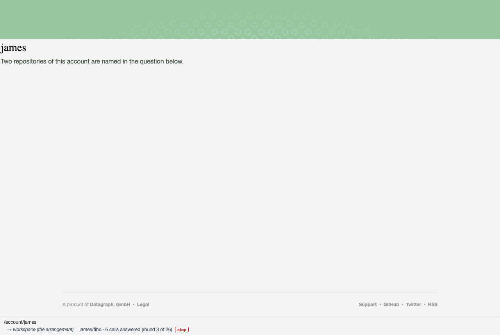
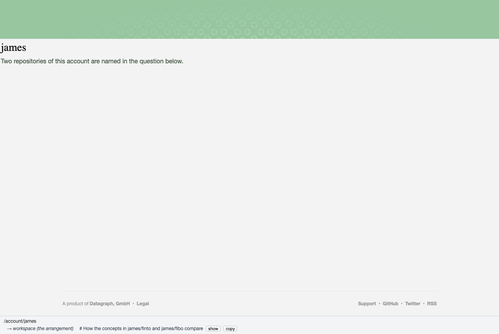
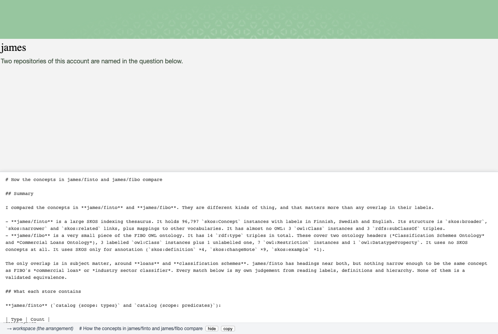
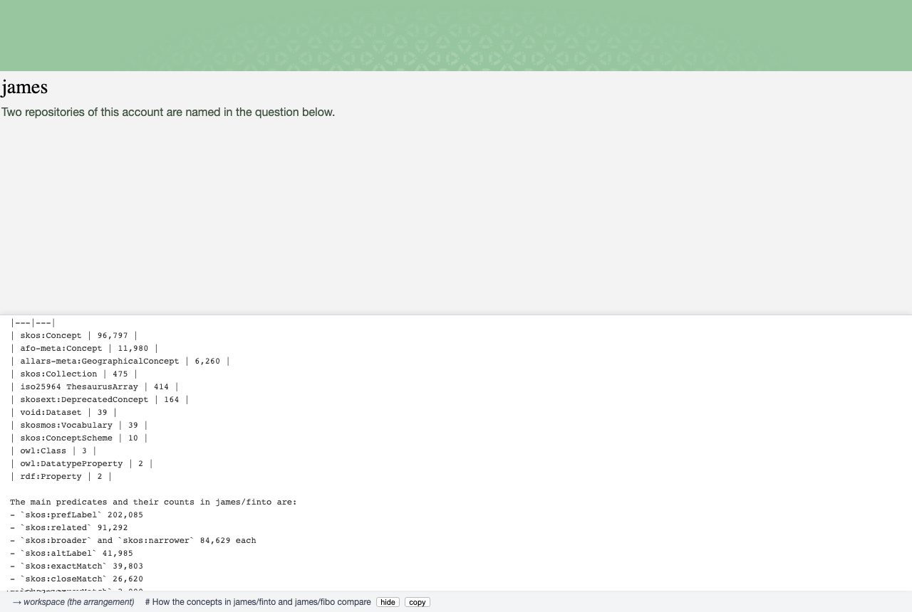
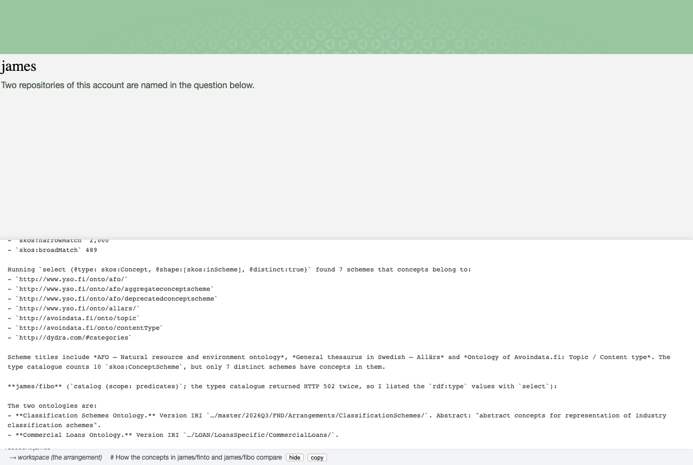
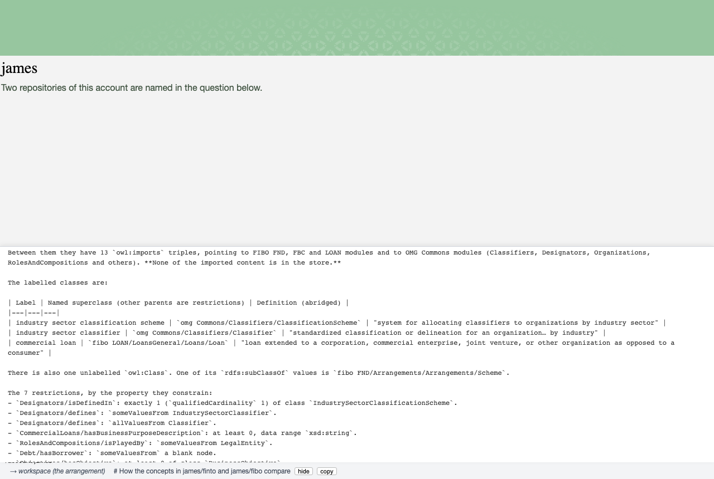
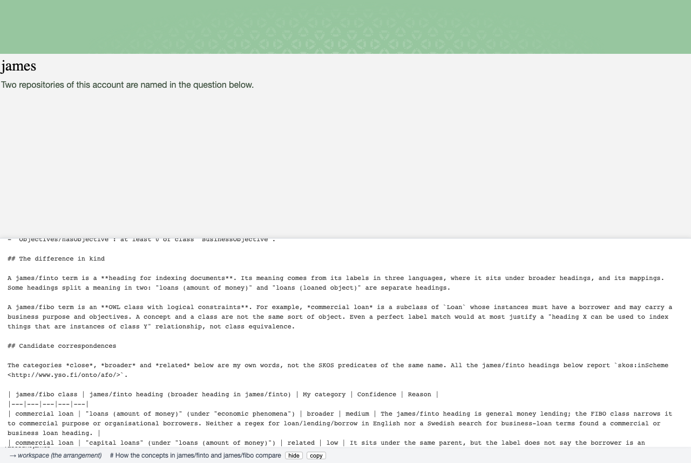
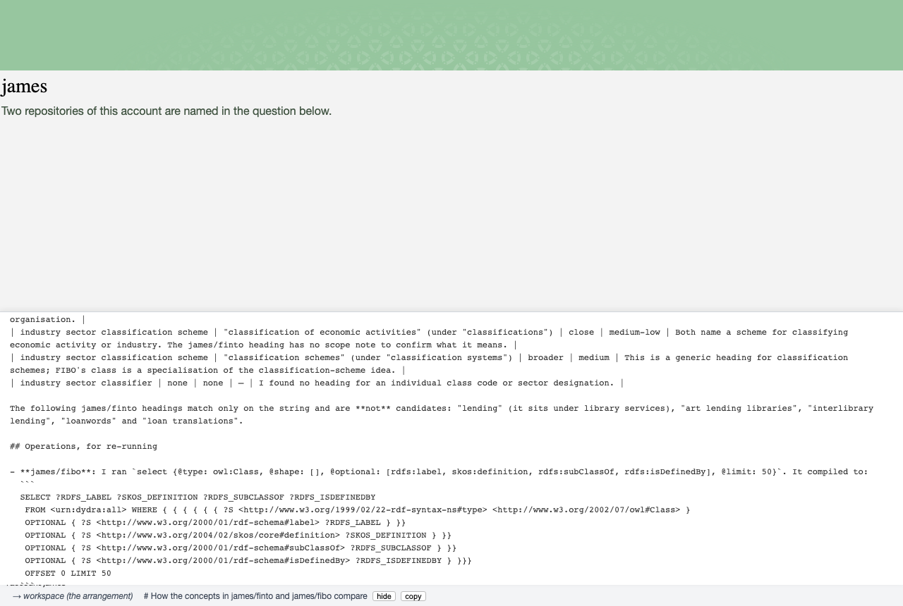
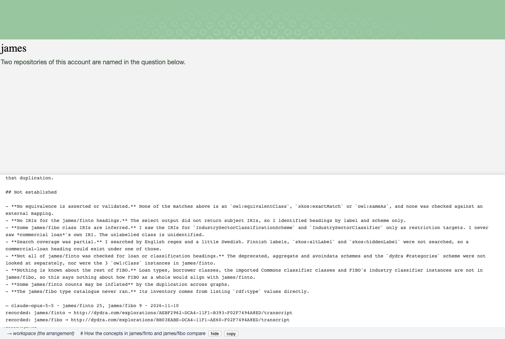

An analysis across two repositories
The third live run of §35, 10 November 2026. Same question, same two repositories, a real model, and the service as it stands today.
Earlier runs of the same question are kept beside this one: 9 November, the first that answered, and the run before it, which spent its whole round budget exploring and was cut off with nothing to show.
What this run was for
The fix it was run to confirm arrived after the run, not before it.
It was run to see the $lang resolution artefact gone. Two direct
probes before the run said it was still there, and so did the run's own
records: a narrow whose where-clause says { $lang: en }
came back with unresolved: [en] beside the right rows, and so did
{ $contains: classification } written as a bare name.
The host's loader had printed ;;; MCP patch 20261109b-de17
eight minutes earlier — but that banner is printed before the loader reads a
single component file, so it names the revision string in
load.lisp and says nothing about the thirty-six files beside it.
The patch directory was synchronised in full the next morning. Probed again
then, across all seven operators the change distinguishes:
$contains, $starts, $ends,
$regex and $lang leave their operand alone, while
$eq and $in still resolve theirs and still report
what they cannot find. The artefact is gone, and the control proves the
resolver is still working rather than switched off.
So this run is a record of the service as it was at 02:17 on 10 November, with the old behaviour, and the screenshots below should be read that way.
The model was not misled this time, which is not the same as being
safe. The 9 November run read that artefact and wrote into its
Not established section that "the server reported $lang: en
as unresolved, so the language filter may not have been applied" — a false
caveat in the one section a reader trusts to say what is not known. This run
saw the same artefact three times and said nothing about it. What varied was
the reading, not the service — which is the argument for taking the stray word
out of the reply rather than instructing the model around it.
The run
| Model turns | 23 — 22 with tool calls, the last the report |
|---|---|
| Served as | claude-opus-5-5 |
| Tool calls | 34 — james/finto 25, james/fibo 9 |
| Operations chosen | select 12, narrow 8, catalog 7, connect 2, materialize 2 |
| Service requests | 39 — 34 answered, 5 refused the connection |
| Tokens | 506 284 in, 12 516 out |
| Recorded as | two transcripts in james/mcp, one per store |
Five of the thirty-nine service requests failed outright — the host dropped
the connection, twice on the opening catalog of each store. The
model saw the 502, said Both stores returned HTTP 502 on catalog;
retrying
, and retried. That is the loop behaving as it should under a
service that is not well, and it is why the run still has a complete inventory
of both stores.



The answer
In full as report.md; the run's own
record, every turn and every call, in run.json.
It reaches the same conclusion as the 9 November run by a different route,
which is worth more than reaching it twice the same way. Both stores inventoried
first; james/fibo read down to its restrictions and the properties
they name; james/finto searched by regex in English and Swedish.
The candidate table proposes four correspondences and one explicit none,
each with a category declared as its own words rather than borrowed from SKOS,
a confidence and a reason — and beside it the list of headings that match on the
string and are not candidates, because in james/finto
"lending" sits under library services and "loanwords" is about language.
Its Not established is the sharpest of the three runs: no subject IRIs
came back from select, so the finto headings are identified by
label and scheme only; two fibo class IRIs were seen only as restriction
targets and one class is unidentified; Finnish labels, skos:altLabel
and skos:hiddenLabel were never searched; and the fibo type
catalogue never ran, so that inventory comes from listing rdf:type
directly.








What is not established about this run
- The
$langfix is unconfirmed in service. It is right in the source and absent from the host. Until the host runs it, any report of a run that uses a bare-name operand may carry the false caveat. - The service dropped five connections. Whether that is load, the reload, or something else was not investigated.
- Three runs is three runs. They agree on the shape of the answer and differ in the route; none of that settles whether the round budget is right.